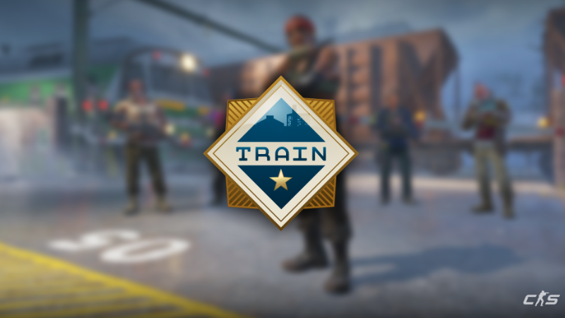
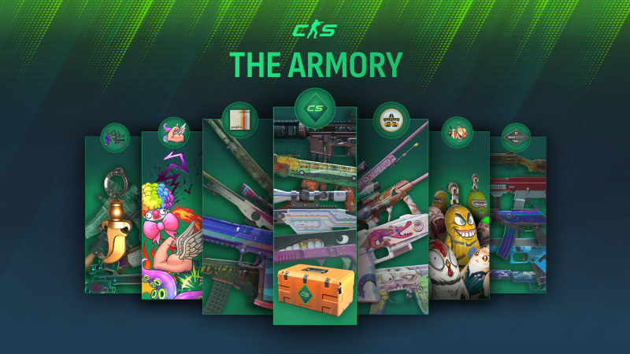

Counter-Strike 2
Luego de varios años, presentamos Counter-Strike 2, una extensa mejora a Counter-Strike: Global Offensive.
Mejoras
Nuevos humos

Los humos se volvieron volumétricos, lo que hace que la jugabilidad sea más intensa. ¿No es genial?
Sistema Premier

Un modo similar al competitivo, con mejor emparejamiento y un sistema de vetado de mapas.
Rangos por mapa

¿Cansado de tener un rango alto pero no tener el mismo nivel en un mapa? Tu problema está solucionado.

13 de Noviembre, 2024
¡Pasajeros al tren!
Nos complace anunciar el regreso del mapa Train, ese gran clásico momentáneamente perdido.

2 de Octubre, 2024
Armería
La actualización de hoy presenta la armería, los nuevos colgantes con temática de armas y mucho más.